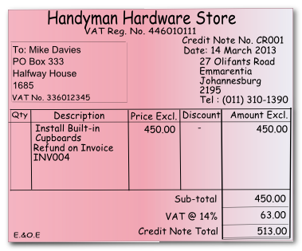
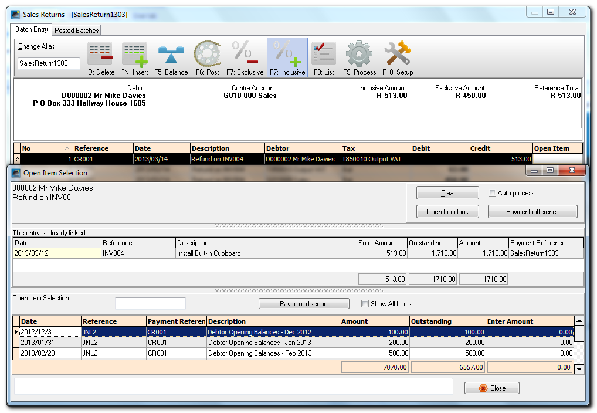
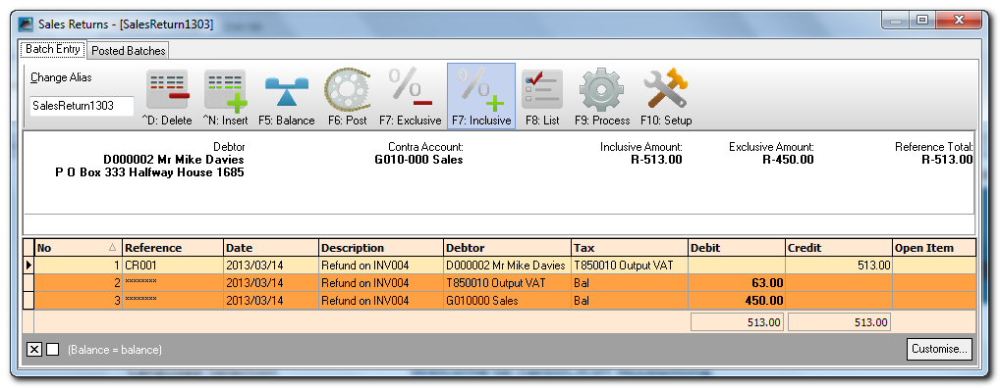
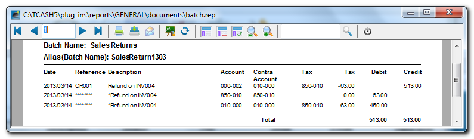
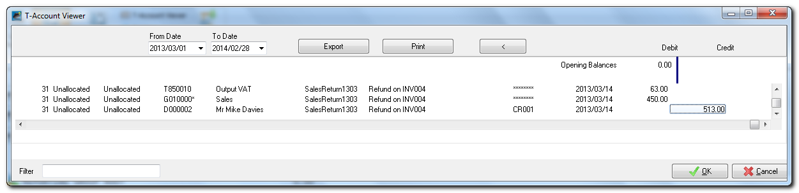
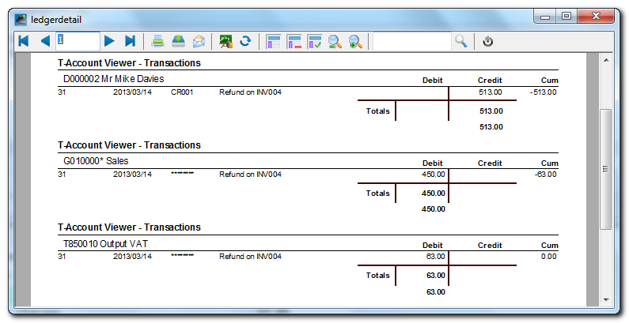

Sales returns journal
You need to capture all the credit noted you have manually issued for sales to your debtors (customers / clients).
For the purposes of the sales returns journal this topic, assume that you will be writing out your credit notes manually. You simply need to capture the details such as the credit note number, date of the credit note, details of the services or goods returned, the amount and VAT/GST/Sales Tax (if you are registered as a VAT/GST/Sales Tax vendor) in the Sales returns journal.
|
|
In addition to the Sales returns journal in the Batch entry mode, you may also use the Document Entry to create Invoices using the following stock item types:
|
|
|
Credit notes are also usually linked to the Sales journal in Setup → Documents (Credit notes). You may add a Sales returns journal in Setup → Batch types and link it to Credit notes. |

Capture the following hand-written credit note:

To enter your Sales Return Transactions:
- On the Default ribbon, select Batch entry.
- Select the Sales returns jnl. and click on the Open button.
- Enter the Alias (batch name) in the Change alias field on the Topbar of the Batch entry screen and press the Enter key. In this example we enter ''SalesReturn1303'' to indicate that the Debtor (customer / client) Credit notes for March 2013 was entered in this Sales returns journal.
|
|
The alias option allows you to identify a batch by a unique name. You will be able to select the batch by alias or batch name if you need to reverse the posted batch or import a posted batch. |

- Click on the F10:Setup icon to set the Options for the batch, if necessary.
|
|
If no contra account is displayed on the Batch type selection screen, you need to set up the options for the batch. If you have not yet set the Sales journal / Sales returns journal, or if your requirements should change, you need to change the settings of the batch. |

|
|
If you need to enter transactions with Tax accounts, you need to check that the Consolidate balancing field is not selected (not ticked) on the Standard tab of the F10:Setup (Options for this batch screen). |

|
|
Note that for Credit notes, the Amount entry field should be set to Credit. |
|
|
If you have a few credit notes, you may enter a negative (minus sign), followed by the amount in the credit column. These amounts will be transferred to the debit column. |
|
|
If you have many credit notes to capture, you need to set the amount entry to debit in the setup options for the Sales journal, before entering credit notes in the Sales journal. Alternatively, you may enter the credit notes in the Sales returns journal. |
|
|
Select the “Debtors” option for the Account lookup type, since you only need to select Debtor accounts when you enter transactions for sales on credit to Debtors only. |
|
|
If you wish to allocate different transactions to different sales accounts, setup one contra account per line. |
- Enter the following debtor (customer / client) credit note in the Sales returns journal:
|
a) |
Reference: |
CR001 |
|
b) |
Date: |
2013/03/14 |
|
c) |
Description: |
Refund on INV004 |
|
d) |
Account: |
D000-002 (Mr Mike Davies) |
|
e) |
Tax: |
Output VAT/GST/Sales Tax |
|
f) |
Amount: |
513.00 DR (Ensure that the F7:Inclusive icon is reflecting the Inclusive mode). |
- After capturing your credit note, the Batch entry screen for the Sales returns journal should reflect as follows:

|
|
You have now captured all your credit notes for the month and may proceed with posting. |
Updating Sales to the Ledger
Once you have completed entering these credit notes, and you are sure they are correct, you may proceed to finalise the batch. The recommended process, is as follows:
- Click on the F5:Balance icon. osFinancials will generate balancing entries. The balancing entries should reflect as follows:

|
|
The Balancing Entries will automatically be generated for each transaction to the Contra account (e.g. Sales) and the Tax (VAT/GST/Sales Tax) accounts. |
|
|
If the description is displayed as "BALANCING ENTRY Sales returns Jnl", the Tax reports may not include these transactions correctly. This implies that the Consolidate balancing field is ticked on the Standard tab of the F10:Setup (Options for this batch screen). You need to deselect (remove the tick) of the Consolidate balancing field on the Standard tab of the F10:Setup (Options for this batch screen) and rebalance the batch. |
- Click on the F8:List icon to print a list of the transactions in the batch.

|
|
It is recommended that the source documents (e.g. sales invoices, etc.) be attached to this List of the transactions and that it be retained for record and audit purposes. You may also click on the |
- Click on the F6:Post icon, to post (update) the batch to the ledger.
T-Account view
All processed (posted) transactions will be accumulated in the Ledger analyser. There are various ways in which the transactions may be viewed, exported and analysed.
To access the T-Account view of the Transactions, do the following:
- On the Reports ribbon, select Ledger analyser1 or Ledger analyser 2.
- Select “Trial balance” report type and click on the Report button.
- On the “Trial balance”, select the “Sales” account.
- Click on the following to get specific views of transactions:
- Batch number (e.g. 31 generated by osFinancials). This will list only the transactions for a specific batch (journal).
- Account code (e.g. G100-000 Sales, T850-010 Output VAT/GST/Sales Tax, D000-002 Mr. Mike Davies). This will list the transactions for a specific account.
- Date – This will list the transactions for a specific date. If you double-click on a date, the From date and To date will be changed to the selected date.
After posting the transactions in the Sales returns journal, the transactions should display as follows in the T-Account viewer:
Batch View

Report View
Click on the Print button.

Accounting equation
Debits = Credits Debit General ledger (i.e. = Credit Debtor's ledger (i.e. individual |